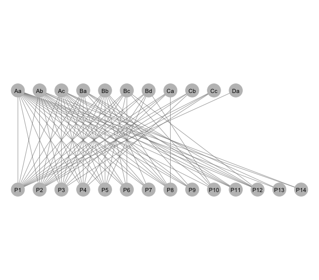
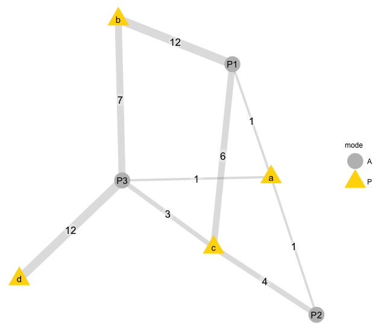
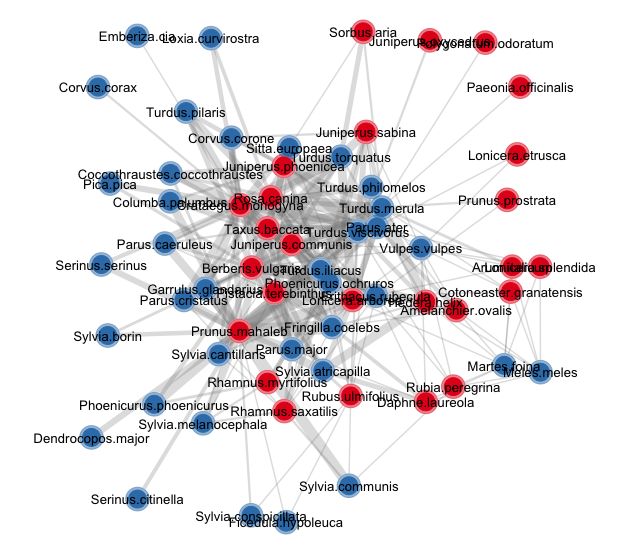
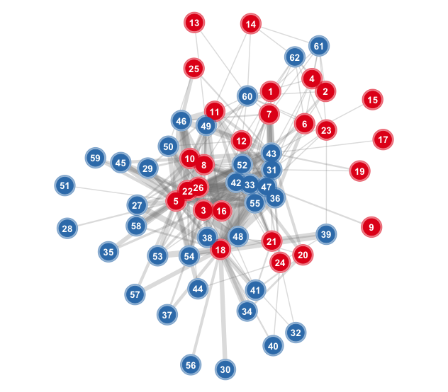

ggbipart
This is a series of R functions aimed to plot bipartite networks within the ggplot2 environment. The library relies heavily on code developed by Francois Briatte for the ggnet library.
Bipartite networks are a special type of network where nodes are of two distinct types or sets, so that connections (links) only exist among nodes of the different sets.
As in other types of network, bipartite strucures can be binary (only the presence/absence of the links is mapped) or quantitative (weighted), where the links can have variable importance or weight.
To plot, we start with an adjacency or incidence matrix. I’m using matrices that illustrate ecological interactions among species, such as the mutualisttic interactions of animal pollinators and plant flowers. The two sets (modes) of these bipartite networks are animals (pollinators) and plants species.
From any adjacency matrix we can get a network object or an igraph object for plotting and analysis.
Required packages
#————————————————————————————————————————————————————————————————
require(ggplot2)
require(network)
require(igraph)
require(sna)
require(ggnet)
require(ergm)
require(intergraph)
require(RColorBrewer)
#————————————————————————————————————————————————————————————————
Here I plot bipartite networks from their adjacency matrices, i.e., the two-mode networks. The standard way to input an adjacency matrix is from a
.txt or a .csv file. Most packages like network, igraph or statnet also accept edge-list archives. These have the form of a three-column array with node1 node2 i or node1 node2 w, where node1 and node2 are two nodes that interact, and i or w are the presence/abscence of interaction (i= 0 or i= 1) or the edge weight in the case of weighted networks.
Initializing bipartite webs as network objects
#————————————————————————————————————————————————————————————————
# Read data matrices.
# Read a network
# Creating the objects. Example input from the clipboard.
#
# Where data.txt has a weighted adjacency matrix, e.g.,:
Aa Ab Ac Ba Bb Bc Bd Ca Cb Cc Da
P1 139 60 9 23 4 104 5 3 5 2 1
P2 184 26 6 10 3 6 17 11 3 1 0
P3 131 74 33 36 13 19 0 9 0 1 0
P4 87 40 38 21 13 0 9 0 1 0 0
P5 100 42 17 12 4 1 1 0 0 0 0
P6 21 15 7 0 4 1 0 0 0 0 0
P7 42 16 3 0 2 0 0 0 0 0 0
P8 31 8 4 5 1 0 0 1 0 0 0
P9 46 8 2 0 3 0 0 0 0 0 0
P10 86 0 0 12 0 2 2 0 0 0 0
P11 23 8 1 5 0 0 0 0 0 0 0
P12 13 6 1 1 0 1 0 0 0 0 0
P13 5 0 1 0 0 0 0 0 0 0 0
P14 9 1 0 0 0 0 0 0 0 0 0
# Use this to copy from the clipboard, after select/copy the above block.
mymat <- read.table(pipe("pbpaste"), header= T, sep= "\t", row.names= 1)
#————————————————————————————————————————————————————————————————
The adjacency matrix is just read from the clipboard as a tab-separated file with header names, and the first column is taken as the row names. This next example (from F. Briatte code) initializes a dataframe:
#————————————————————————————————————————————————————————————————
# A weighted adjacency matrix. Rows are animal species; columns are plant
# species.
bip= data.frame(P1= c(1, 12, 6, 0),
P2= c(1, 0, 4, 0),
P3= c(1, 7, 3, 12),
row.names= letters[1:4])
#————————————————————————————————————————————————————————————————
These are two example datasets of well-sampled plant-frugivore interaction networks from S Spain, read in the usual way. I also read the attributes files, i.e., data.frames with node characteristics that can be used later to label the nodes.
Note that the matrices are read as data.frames. This is useful for later analysis. Yet it is very handy to have also these adjacency matrices in matrix form.
#————————————————————————————————————————————————————————————————
# The Nava de las Correhuelas dataset.
nch<- read.table("./data-raw/w96_adj_fru.csv",
header=T, sep=",", row.names=1,
dec=".", na.strings="NA")
## Node attributes
nch_attr<- read.table("./data-raw/w96_node_attributes.csv",
header=T, sep=",",
dec=".", na.strings="NA")
# The Hato Raton dataset.
hr<- read.table("./data-raw/w97_adj_fru.csv",
header=T, sep=",", row.names=1,
dec=".", na.strings="NA")
## Node attributes
hr_attr<- read.table("./data-raw/w97_node_attributes.csv",
header=T, sep=",", dec=".", na.strings="NA")
#————————————————————————————————————————————————————————————————
Node attributes include different variables characterizing each individual node. These values can later be passed to the
bip_ggnet funtions to modify graph properties of nodes.
#————————————————————————————————————————————————————————————————
glimpse(nch_attr)
## Observations: 62
## Variables: 26
## $ class Magnoliopsida, Liliopsida, Magnoliopsida,...
## $ order Rosales, Arales, Ranunculales, Rosales, Euph...
## $ family Rosaceae, Araceae, Berberidaceae, Rosaceae,...
## $ genus Amelanchier, Arum, Berberis, Crataegus, ...
## $ species Amelanchier.ovalis, Arum.italicum,...
## $ spcode Amova, Arita, Bevul, Cogra, Crmon, Dalau...
## $ w NA, NA, NA, NA, NA, NA, NA, NA, NA, NA, NA...
## $ g 7.3, 9.2, 5.5, 7.0, 9.3, 6.4, 8.4, 8.6, 12.9,....
## $ f NA, NA, NA, NA, NA, NA, NA, NA, NA, NA, NA,...
## $ a 0.00010, 0.66000, 14.52000, 0.14500, 0.84500,...
## $ geog 4, 7, 14, 6, 14, 10, 6, 13, 4, 8, 8, 9, 4, 5,...
## $ ph 1.0, 0.5, 3.0, 1.0, 6.0, 1.0, 3.0, 10.0, 2.0,...
## $ pp 0.3333, 0.2121, 0.2424, 0.3030, 0.1515,...
## $ ps NA, NA, NA, NA, NA, NA, NA, NA, NA, NA, NA, NA...
## $ pa 0.1515, 0.1515, 0.1212, 0.0909, 0.1515,...
## $ pu 0.4242, 0.5758, 0.2121, 0.5455, 0.0303,...
## $ hab climax, climax, climax, climax, climax,...
## $ diet NA, NA, NA, NA, NA, NA, NA, NA, NA, N...
## $ forag NA, NA, NA, NA, NA, NA, NA, NA, N...
## $ noct NA, NA, NA, NA, NA, NA, NA, NA, NA, NA...
## $ nativ 1, 1, 1, 1, 1, 1, 1, 1, 1, 1, 1, 1, 1, 1, 1, 1, ...
## $ frlen 7.0, 11.1, 10.4, 7.5, 12.1, 9.4, 7.2, 8.2, ...
## $ fleshy Yes, Yes, Yes, Yes, Yes, Yes, Yes, Yes...
## $ seedm 0.003, 0.038, 0.020, 0.025, 0.124, 0.022,...
## $ height 1.9, 0.3, 1.2, 1.3, 4.0, 1.2, 3.0, 0.6, 2.8,...
## $ grwform shrub, herb, shrub, shrub, tree, shrub,,...
#————————————————————————————————————————————————————————————————
#————————————————————————————————————————————————————————————————
glimpse(hr_attr)
## Observations: 33
## Variables: 26
## $ class Aves, Aves, Aves, Aves, Aves, Aves,...
## $ order Passeriformes, Passeriformes, Passerif...
## $ family Muscicapidae, Muscicapidae, Muscicapida...
## $ genus Sylvia, Sylvia, Erithacus, Sylvia, Turdus,...
## $ species Sylvia.atricapilla, Sylvia.borin, Erithacus.rubecula,...
## $ spcode Syatr, Sybor, Errub, Symel, Tumer, Tuphi,...
## $ w 17.5, 18.7, 15.8, 11.5, 84.0, 65.8, 16.9, ...
## $ g 8.0, 8.0, 8.5, 6.6, 13.7, 12.2, 7.3, 8.3, 8....
## $ f 0.861, 0.924, 0.659, 0.739, 0.889, 0.660...
## $ a 4.692, 2.058, 16.150, 15.908, 11.842, 0....
## $ geog 14, 6, 13, 10, 14, 14, 12, 2, 6, 12, 7, 10...
## $ ph 7, 1, 7, 12, 12, 3, 1, 2, 1, 3, 6, 12, 6, 12, 5,...
## $ pp 0.063, 0.250, 0.125, 0.000, 0.000, 0.438,...
## $ ps 0.000, 0.000, 0.188, 0.125, 0.000, 0.063,...
## $ pa 0.000, 0.000, 0.000, 0.000, 0.125, 0.063,...
## $ pu 0.000, 0.000, 0.000, 0.000, 0.000, 0.125,...
## $ hab forest, forest, forest, other, forest, forest...
## $ diet fruit, fruit, fruit, fruit, fruit, fruit, frui...
## $ forag solitary, solitary, solitary, solitary, soc...
## $ noct 0, 0, 0, 0, 0, 0, 0, 0, 0, 0, 0, 0, 0, 0, 0, NA,...
## $ nativ 1, 1, 1, 1, 1, 1, 1, 1, 1, 1, 1, 1, 1, 1, 1, 1, ...
## $ frlen NA, NA, NA, NA, NA, NA, NA, NA, NA...
## $ fleshy NA, NA, NA, NA, NA, NA, NA, NA, N...
## $ seedm NA, NA, NA, NA, NA, NA, NA, NA, NA, NA...
## $ height NA, NA, NA, NA, NA, NA, NA, NA, NA, NA...
## $ grwform NA, NA, NA, NA, NA, NA, NA, NA, NA, NA,...
#————————————————————————————————————————————————————————————————
Here I use the function
bip_init_network to initialize a few examples of bipartite networks. The function returns a network object. The equivelent function bip_init_igraph returns an igraph (graph) object.
#————————————————————————————————————————————————————————————————
source("./R/bip_init_network.R")
source("./R/bip_init_igraph.R")
nch.net<- bip_init_network(nch) # Network object
nch.ig<- bip_init_igraph(nch) # igraph object
hr.net<- bip_init_network(hr) # Network object
hr.ig<- bip_init_igraph(hr) # igraph object
#————————————————————————————————————————————————————————————————
Functions to plot network graphs
Theggbipart package includes the following functions:
bip_qtplot
Simple function to plot a weighted bipartite network in network object. The input is just the weighted (quantitative) adjacency matrix of a two-mode network. Uses objects of typenetwork.
bip_railway
Simple function to plot a bipartite network with the classic layout of two parallel sets of nodes (as in thebipartite package).
bip_ggnet
Plotting bipartite networks from the adjacency matrix of a two-mode network. It uses theggnet package extensively.
bip_igplot
Function to plot a weighted bipartite network in igraph. Its inputs are the adjacency matrix, to get the dimensions from, and the igraph object corresponding to the matrix.
#————————————————————————————————————————————————————————————————
# Sourcing required functions and initializing the net objects.
source("./R/bip_ggnet.R")
source("./R/bip_igplot.R")
source("./R/bip_qtplot.R")
source("./R/bip_railway.R")
source("./R/vectorize.R")
source("./R/bip_edgewt.R")
Using bip_ggnet for bipartite graphs
Bipartite networks with ggnet2 using the ggplot2 framework
#————————————————————————————————————————————————————————————————
We first initialize the bipartite network; then use the adjacency matrix to compute scaled weighted edges with function
edgewt. This is based in code from Francois Briatte, using package ggnet, function ggnet2.
ggnet2 automatically detects two-mode graphs from their bipartite network attribute. To simplify the plotting of each mode, it understands arguments of the form [alpha, color, shape, size] = “mode”, which will mark the primary mode as "actor" and the secondary mode as "event".
Node colors
Let’s now assign vertex attributes obtained from the attributes file. The attributes can be passed toggnet2 to indicate that the nodes belong to a group. or have a given qualitative or quantitative attribute All the user has to do is to pass the name of the vertex attribute to the color argument, which will find it in the list of vertex attributes and use it to map the colors of the nodes:
#————————————————————————————————————————————————————————————————
# Attributes for animals and plants.
names(nch_attr)
# Load in the preferred attributes
# We need to convert factors to chars in order to assign the attributes.
Fam<- as.character(nch_attr$family)
nch.net %v% "Fam"= Fam
Gen<- as.character(nch_attr$genus)
nch.net %v% "Gen"= Gen
nch.net %v% "BM"= nch_attr$w
nch.net %v% "FrDiam"= nch_attr$g
#————————————————————————————————————————————————————————————————
A simple graph
This graph uses functionbip_railway:
Unweighted
#————————————————————————————————————————————————————————————————
# Plot layout coordinates for railway networkplot. Input is the
# adjacency matrix.
#
mymat <- read.delim("./data-raw/data.txt", row.names=1) # Not run.
g<- bip_railway(mymat, label=T)
## Loading required package: scales
g+ coord_flip()
#————————————————————————————————————————————————————————————————

Weighted
Label the edge weights directly into the edges of the graph; uses thebip_ggnet.
#————————————————————————————————————————————————————————————————
# Labelled edges with edge weight.
bip= data.frame(P1= c(1, 12, 6, 0),
P2= c(1, 0, 4, 0),
P3= c(1, 7, 3, 12),
row.names= letters[1:4])
col= c("A"= "grey80", "P"= "gold2")
bip.net<- bip_init_network(as.matrix(bip))
bip_ggnet(bip.net, as.matrix(bip),
# color= "mode", palette = col,
edge.label = "weights",
label= TRUE)
## Warning in guide_merge.legend(init, x[[i]]): Duplicated override.aes is
## ignored.
# Set colors for each mode
col= c("P"= "#FC9272", "A"= "#9ECAE1")
pp<- bip_ggnet(hr.net, as.matrix(hr),
size=7, shape= "mode", #label= T,
color= "mode", palette= col,
layout.exp= 0.25) +
geom_text(aes(label= network.vertex.names(hr.net)),
color= "black", size= 3) +
theme(legend.position="none") # Hide legend
pp
#————————————————————————————————————————————————————————————————

Antother alternative is to pass the node colors directly, with a vector of node colors that has exactly the same length as the number of nodes in the network:
#————————————————————————————————————————————————————————————————
pp1<- bip_ggnet(nch.net, as.matrix(nch),
size= 6, color= "mode", label= T, label.size=2,
palette= c("P"= "indianred3",
"A"= "steelblue4")) +
theme(legend.position="none") # Hide legend
#————————————————————————————————————————————————————————————————
#————————————————————————————————————————————————————————————————
# Adding graphic details with other geoms. Node labels are the vertex names.
pp2<- bip_ggnet(nch.net, as.matrix(nch),
size= 0,
shape= "mode",
palette= "Set1",
color= "mode",
layout.exp= 0.25) +
geom_point(aes(color= color), size=8, color="white") +
geom_point(aes(color= color), size= 8, alpha= 0.5) +
geom_point(aes(color= color), size= 6) +
geom_text(aes(label= network.vertex.names(nch.net)),
color= "black", size= 3.5) + # check_overlap= TRUE
guides(color= FALSE) +
theme(legend.position="none") # Hide legend
pp2
#————————————————————————————————————————————————————————————————

#————————————————————————————————————————————————————————————————
# Numbered nodes.
nums<- as.vector(c(1:sum(dim(nch))))
pp3<- bip_ggnet(nch.net, as.matrix(nch),
size= 0,
shape= "mode",
palette= "Set1",
color= "mode",
layout.exp = 0.25) +
geom_point(aes(color= color), size=10, color="white") +
geom_point(aes(color= color), size= 10, alpha= 0.5) +
geom_point(aes(color= color), size= 8) +
geom_text(aes(label= nums),
color= "white", size= 3.5, fontface="bold") +
guides(color= FALSE) +
theme(legend.position="none") # Hide legend
pp3
#————————————————————————————————————————————————————————————————

#————————————————————————————————————————————————————————————————
sessionInfo()
## R version 3.3.2 (2016-10-31)
## Platform: x86_64-apple-darwin13.4.0 (64-bit)
## Running under: macOS Sierra 10.12.4
##
## locale:
## [1] en_US.UTF-8/en_US.UTF-8/en_US.UTF-8/C/en_US.UTF-8/en_US.UTF-8
##
## attached base packages:
## [1] stats grDevices graphics datasets utils methods base
##
## other attached packages:
## [1] scales_0.4.1 dplyr_0.5.0 RColorBrewer_1.1-2
## [4] taxize_0.8.4 lme4_1.1-12 Matrix_1.2-7.1
## [7] knitr_1.14 intergraph_2.0-2 popgraph_1.4
## [10] igraph_1.0.1 ggnetwork_0.5.1 ggnet_0.1.0
## [13] ggplot2_2.2.1 markdown_0.7.7 downloader_0.4
## [16] bipartite_2.08 sna_2.4 network_1.13.0
## [19] statnet.common_3.3.0 vegan_2.4-0 lattice_0.20-34
## [22] permute_0.9-0 ape_4.1
##
## loaded via a namespace (and not attached):
## [1] ggrepel_0.6.9 Rcpp_0.12.9 assertthat_0.1
## [4] rprojroot_1.0-2 digest_0.6.12 foreach_1.4.3
## [7] R6_2.2.0 plyr_1.8.4 evaluate_0.9
## [10] spam_1.3-0 httr_1.2.1 lazyeval_0.2.0
## [13] minqa_1.2.4 data.table_1.10.0 nloptr_1.0.4
## [16] rmarkdown_1.3 splines_3.3.2 stringr_1.2.0
## [19] munsell_0.4.3 mgcv_1.8-15 htmltools_0.3.5
## [22] tibble_1.2 lpSolve_5.6.13 codetools_0.2-15
## [25] reshape_0.8.6 MASS_7.3-45 grid_3.3.2
## [28] nlme_3.1-128 jsonlite_1.3 gtable_0.2.0
## [31] DBI_0.4-1 magrittr_1.5 formatR_1.4
## [34] stringi_1.1.2 reshape2_1.4.2 sp_1.2-4
## [37] xml2_1.1.1 iterators_1.0.8 tools_3.3.2
## [40] bold_0.4.0 maps_3.1.0 fields_8.4-1
## [43] parallel_3.3.2 colorspace_1.2-6 cluster_2.0.5
## [46] sampling_2.8
#————————————————————————————————————————————————————————————————
Acknowledgements
This code benifits from comments andR code sharing by François Briatte and Scott Chamberlain.Best wishes, and happy computing! -- Pedro
Last Updated:
Martes, 28 Marzo, 2017 01:35 AM On line since 1989. Pedro Jordano